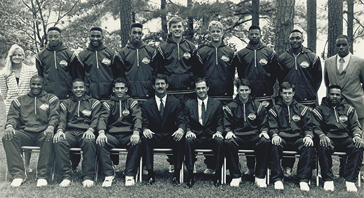

History of Clayton State University
As universities go, Clayton State is young. That may be why we understand dreams so well. On this campus and in our classes, we see the dreams and hopes of past generations becoming our day-to-day reality.
Each year, since first opening our doors in 1969, we build on those new realities, supporting dream after dream with resources, facilities, an encouraging community, and traditions that unite us under a banner of Laker pride.
Our Past
- June 1965: Board of Regents authorizes three new junior colleges, one to serve south metropolitan Atlanta.
- October 1965: Board of Regents designates the northern section of Clayton County as the location of college for its natural beauty and access to Interstate 75.
- October 1966: The citizens of Clayton County pass $4,900,000 bond issue to pave the way for construction of the new campus.
- February 1967: The Board of Regents receives $3,300,000 for buildings and equipment.
- February 1968: The college is officially named Clayton Junior College.
- October 1968: Construction begins.
-
February 1969: Dr. Harry S. Downs is named the college’s first president.
-
September 1969: Clayton Junior College opens as a two-year college offering associate’s degrees, with an inaugural class of 942 students.
- January 1971: College is accredited by the Southern Association of Colleges and Schools.
- September 1974: College opens the Classrooms building.
- September 1979: The Library building opens.
- January 1981: Multi-purpose gymnasium and dance studio are added to the Physical Education Building.
- September 1981: College establishes the Division of Technology (changed to the School of Technology in 1986).
- June 1985: The Charles Schmidlapp Conklin Chair of Finance, the college’s first faculty chair, is established in honor of the late Charles S. Conklin, long-time Clayton County banker and member of the College Foundation’s Board of Trustees.
- February 1986: Board of Regents authorizes the college to become a four-year university, offering both associate’s and bachelor’s degrees, effective July 1, 1986.
- May 1986: Board of Regents authorizes name change to Clayton State College, effective July 1, 1986.
-
July 1, 1986: College officially becomes Clayton State College.
- September 1987: College opens first off-campus facility, with classes beginning in the Aircraft Mechanics Program in Jonesboro.
- June 1988: Technology Building opens as the ninth building on campus.
-
November 1990: The college enters intercollegiate athletic competition with the men’s basketball program.

- December 1990: Continuing Education Center opens.
- January 23, 1991: Spivey Hall holds its first concert with violinist Itzhak Perlman.
-
August 1993: Clayton State Boulevard opens as a new entrance road from Highway 54 to the main campus entrance.
-
January 1994: Dr. Richard A. Skinner is named Clayton State’s second president.
- Fall 1994: Former president Dr. Richard Skinner and members of the campus created a time capsule in celebration of Clayton State’s 25th anniversary.
- Spring 1995: Clayton State joins NCAA Division II and the Peach Belt Conference.
- August 1995: Enrollment tops 5,000 for the first time.
-
November 1996: Board of Regents authorizes change to university status and approves the name Clayton College & State University.
- April 1997: Continuing Education Center rededicated and renamed after President Emeritus Harry S. Downs.
- January 1998: Clayton College & State University becomes the first university in the southeast and third in the nation to issue notebook computers to all students, at all levels, in all majors, as part of the Information Technology Project—transforming the campus and making Clayton College & State University a national pioneer in ubiquitous computing.
- May 1998: Board of Regents establishes the New College for Economic and Business Development.
- June 1999: Michael F. Vollmer named interim president.
- August 1999: Clayton Place Apartments open immediately adjacent to campus.
- March 2000: Main campus lake named "Swan Lake".
- March 2000: The music building opens.
-
June 2000: Dr. Thomas K. Harden becomes Clayton College & State University's third president.
- June 2000: Delta Air Lines attorney John Parkerson named chairman of Clayton College & State University Foundation Board of Trustees.
- October 7, 2000: Clayton College & State University holds first-ever Fall Homecoming celebration.
-
July 31, 2001: Groundbreaking held for the Clayton College & State University University Center.
- August 2002: Dr. Raymond Osei of the University of the Cape Coast in Ghana starts teaching at Clayton College & State University as the university’s first Fulbright Scholar in Residence.
- December 2002: Clayton College & State University changes name of its academic division, New College, to the College of Information and Mathematical Sciences.
- January 2004: Clayton College & State University hosts its first official foreign exchange student, Jonathan Coulson of England’s University of Northumbria.
- April 2004: Cygnet, Clayton College & State University’s first student literary arts journal is published.
- April 2004: Clayton College & State University awarded its first Fulbright-Hays grant.
- November 2004: Clayton College & State University announces the launch of two new satellite centers in Henry County at Locust Grove and in Fayette County in Fayetteville.
-
May 2005: Clayton College & State University becomes Clayton State University.
- Fall 2005: Clayton State earns a Carnegie Community Engagement Classification.
- November 2005: First graduate degree, the Master of Arts in Liberal Studies, approved.
-
April 2006: School of Business earns AACSB accreditation.
- January 2007: University reorganizes into three colleges and three schools: the College of Professional Studies, the College of Arts & Sciences, and the College of Information and Mathematical Sciences, and the School of Nursing, the School of Business, and the School of Graduate Studies.
- March 12, 2007: Clayton State women’s basketball team wins NCAA Division II South Atlantic Regional Championship.
- March 22, 2007: Clayton State Women’s Basketball advances to NCAA Division II Final Four with 60-55 win over Texas A&M Commerce in the NCAA Division II Elite Eight in Kearney, Neb.
-
December 2007: Clayton State dedicates Clayton State University–Fayette in Peachtree City.
- May 2008: Clayton State purchases Atlanta Bible College property, now known as Clayton State–East.
- August 12, 2008: Clayton State opens Laker Hall student residence.
- September 12, 2008: New Student Activities Center opens.
- October 1, 2008: Clayton State dedicates School of Business Building.
- May 18, 2009: Dr. Thomas Hynes officially joins Clayton State as interim president.
-
February 9, 2010: The Board of Regents approved the permanent appointment of Dr. Thomas J. (Tim) Hynes, Jr. as president of Clayton State University.
- January 2011: Laboratory Annex building opens off of the Natural and Behavioral Sciences building.
-
March 2011: The women’s basketball program claimed the first NCAA Division II National Championship in program history, doing so with a commanding 69-50 victory over Michigan Tech on March 25, 2011 in St. Joseph, Missouri.
- June 2011: Clayton State purchases Clayton Station Apartments to expand student housing.
- September 2015: Lakeview Discover and Science Center opens.
- October 2015: Clayton State University unveils mural painted by acclaimed artist Athos Menaboni displayed in the James M. Baker University Center.
- January 2016: Clayton State purchases 13 acres of the Phyllis Trammell estate for future development.
- November 2016: Clayton State University launched Strategic Plan 2020, marking its commitment to becoming a national model for community engagement and student enrichment in higher education.
- April 2017: Launched its first comprehensive campaign, Greater In Mind, a four-year, $12 million campaign to offer greater financial support to students who may otherwise not be able to complete their degree without some form of aid.